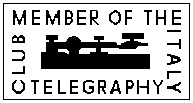

Detta var tidigare en mötesplats som ARI-medlemmar kunde vara med på
om telegrafi var deras favoritmod.
Nu är det en internationell klubb som innehåller utlänska medlemmar.
Klubben sköts av:
IN3VST
Vito Vetrano
Via Verdi 27/A
I-39012 Meran (BZ)